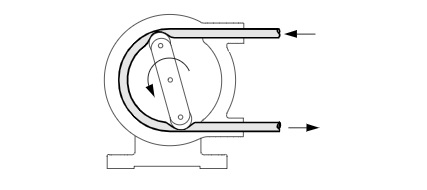

In positive displacement pumps, the liquid is forced to move because it is displaced by the movement of a piston, vane, screw, or roller. The pumps force liquid into the system regardless of the resistance that may oppose the transfer. It is particularly important therefore, to consider to the wider pumping system and safety requirements, particularly the potential need for relief valves to avoid over pressurisation of the system when using positive displacement pumps.
Positive displacement pumps generally carry a higher overall efficiency than centrifugal pumps because internal losses are minimised.
Rotary pumps are a category of positive displacement pumps consisting of a chamber that contains gears, cams, screws, lobes, plungers, or similar devices actuated by rotation of the drive shaft. These valves feature no separate inlet and outlet valves and run with tight clearances. Typical applications include:
In this pump, the liquid pumping and sealing action depends on the elasticity of the flexible members. The flexible member may be a vane, a liner, or a tube (as in the example above).
During operation, the rotor rotates, compressing the flexible member against the pump casing using rollers. This creates a complete closure of the tube that produces a positive displacement effect as the rotor rotates.
The liquid moves through a tube and does not come into contact with any pump part. This makes the peristaltic pump a perfect choice for transporting liquids and chemicals without the risk of cross-contamination.
A wide variety of liquids can be pumped with hose pumps. Their working is based on the alternating relaxation and compression of the pump’s flexible hose. This process sucks the content in and moves it onward.
These types of peristaltic pumps are used extensively in engineering systems, life sciences, pharmaceuticals, and biotechnology due to their excellent control properties. Microfluidic pumps deliver variable flow rates with excellent life cycle performance and little maintenance.
These peristaltic pumps are suitable for applications that require lower flow rates. They can move large volumes of fluids at a high head. These are heavy-duty pumps.
Selecting an appropriate pump type is the first step, after which, the pump must be appropriately sized for the particular application. This requires significant understanding of the wider pumping system, particularly to establish the required pump duty.
Notable inputs:
Several industry tools exist to aid in pump sizing using the above inputs. One such useful tool by Xylect is linked here. Additionally, the following spreadsheet may be particularly helpful in establishing the aforementioned inputs. (This file can also be found in the supporting documents folder.)